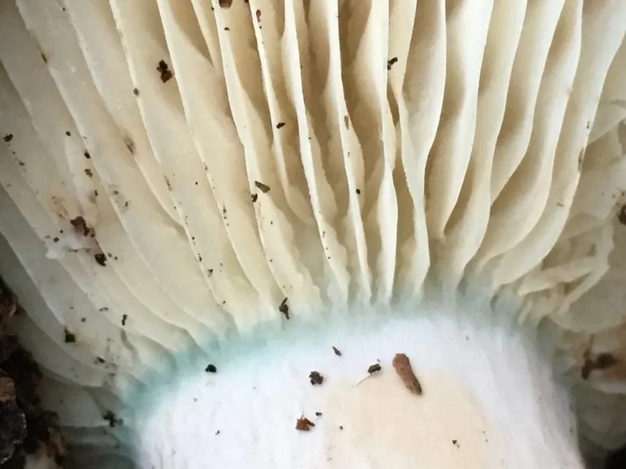

真菌 · 真菌界
玫瑰红菇 Russula rosea

红菇科食用菌，菌盖玫瑰红至粉红、质地硬脆，菌肉致密耐煮，夏秋生于阔叶林地上，须煮熟后食用。
- 分类
- 门担子菌门纲伞菌纲目红菇目科红菇科属红菇属
- 栖息环境
- 阔叶林地上，与栎类等形成外生菌根，夏秋发生
- 地理分布
- 北半球温带阔叶林分布，中国华北、西南及欧洲、北美有记录
- 保护级别
- 暂无评估；野生资源受林地减少影响
物种志
玫瑰红菇的菌盖直径 4–10 厘米，初期半球形，后平展至中央微凹，表面玫瑰红、粉红至暗红，常带褪色斑块，光滑，湿时微黏，边缘老后有条纹。菌肉白色，极硬脆，气味温和。菌褶白色至乳白，较密，等长，直生。菌柄长 3–8 厘米，直径 1–2.5 厘米，白色，有时带粉红晕，质地坚硬。孢子印白色。
玫瑰红菇生于阔叶林地上，与栎、山毛榉等形成外生菌根，夏秋 7–10 月发生。它的菌肉致密、耐煮不烂，是红菇属中口感较好的食用种，适合炖肉、炒食，但必须煮熟。红菇属中不少粉红色种类有毒或辛辣，采食时需注意菌褶是否脆、菌柄是否中空、菌肉是否有辛辣味，并避免与毒红菇等混淆。由于红菇属依赖树木共生，目前无法人工栽培，野生资源需合理采集。
形态与习性
- 菌盖直径 4–10 厘米，玫瑰红至粉红，边缘有条纹
- 菌肉白色，极硬脆，气味温和
- 菌柄长 3–8 厘米，白色，有时带粉红晕
- 孢子印白色，孢子具小疣
- 生境阔叶林地上，与栎类共生，夏秋发生
- 食用性菌肉耐煮，须煮熟食用，避免误采毒红菇
趣味知识
- 玫瑰红菇的菌肉硬得像粉笔，切开时“啪”地断裂，是红菇属的典型质感。
- 它耐煮不烂，炖肉时久煮仍保持形状，因此在产地颇受欢迎。
- 红菇属的红色系种类最容易混淆，有毒的毒红菇菌盖更鲜红、菌褶更脆。
- 所有红菇都必须煮熟，生食可能引起胃肠不适。